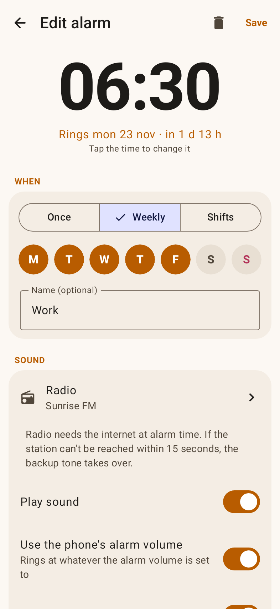
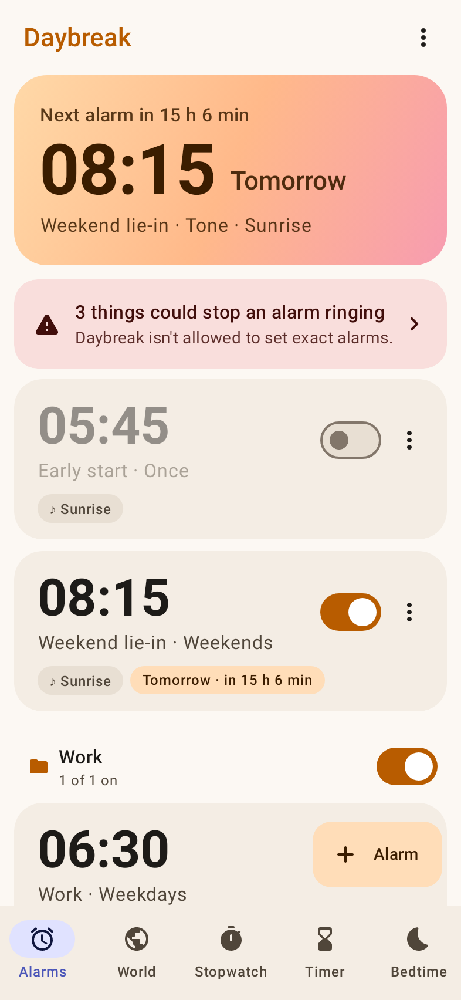
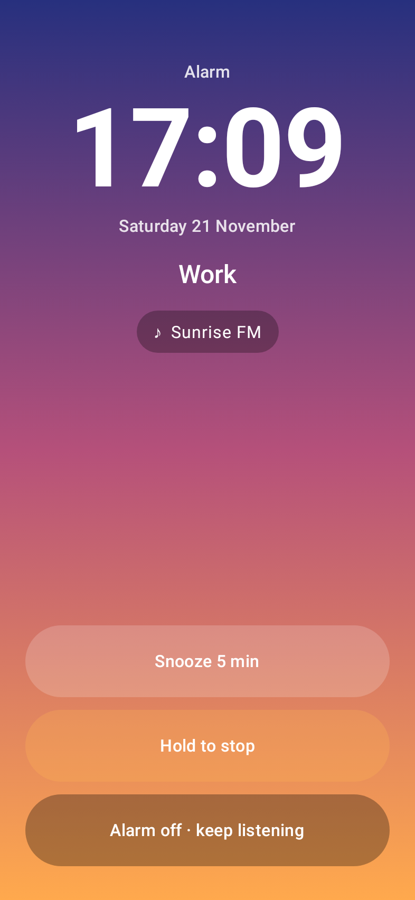
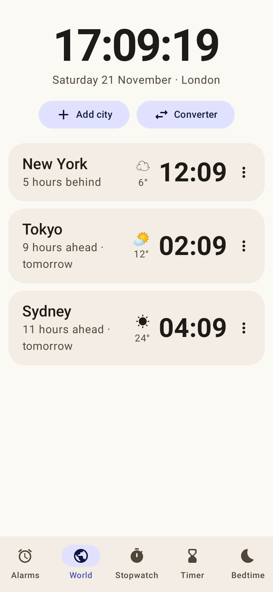
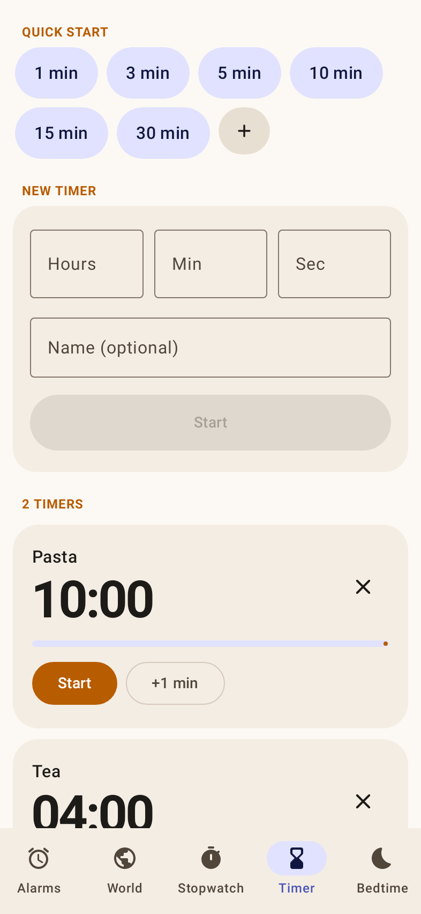
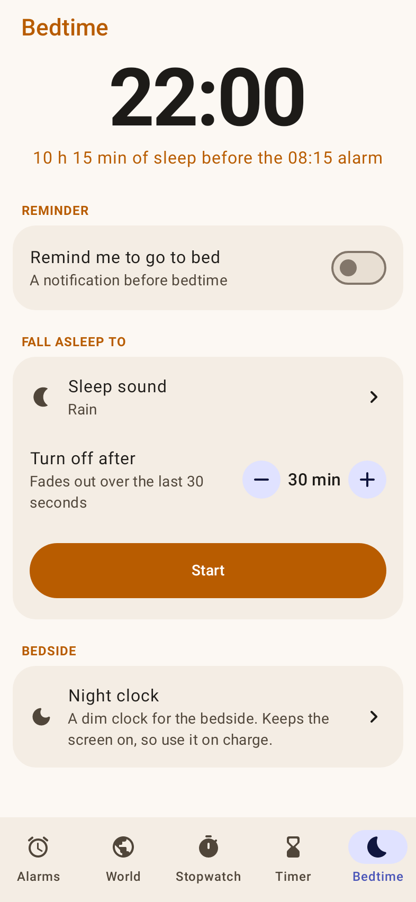

Wake up to the song you choose, every time
Daybreak is an alarm clock for Android. Wake to any song, a radio station, your own music or one of its own tones, fading in gently with a sunrise on the screen.
It books every alarm with Android's own alarm service, checks your phone will really ring, and plays a backup tone if the song or station does not start.
Daybreak plays music that other people own. What the law says
- Version 1.1
- Android 11 or later, 64-bit
- 58 MB
Free, with nothing to unlock. No adverts, no account with the developer, no tracking. Compare or read the release notes.
Chrome may say the file might be harmful. It shows this for app files that do not come from Google Play. Choose Download anyway.

- No subscriptionEvery feature is in the free app.
- No advertsNone in the app and none on this site.
- No accountNothing to sign up for.
- A backup toneIf your song or station fails, a built-in tone rings instead.
A look inside
These are the real screens, drawn from the app's own code with made-up alarms. Swipe or scroll sideways to see them all.





How it works
Set an alarm the way you would on any clock, then choose what you wake to.
Set the time
Once, on chosen days, or on a shift pattern. Give it a name and add it to a group.
Choose what wakes you
Any song, several songs that change each morning, a radio station, your own music or a built-in tone.
Run the check-up once
Daybreak lists anything on your phone that could stop an alarm ringing, and rings a test alarm to prove it works.
Everything is in, and all of it is free
Nothing below is held back for a paid tier, because there is no paid tier.
Waking up
- Any song, saved ahead
- The song the next alarm needs is saved on the phone beforehand, so it plays even without internet.
- Radio
- UK stations first, the world by search, with favourites and recents.
- Gentle wake
- Fades up over a time you choose, with a sunrise on the screen.
- A backup tone
- If the chosen sound is not playing after 15 seconds, a built-in tone takes over.
Getting up
- Wake-up tasks
- Sums, shaking, steps or scanning a barcode before it will stop. Off unless you set one.
- Repeat until I'm up
- On any alarm, as well as alarm groups.
- Are you up?
- An optional check a few minutes later. Ignore it and the alarm rings again.
- Morning card
- The weather and your day on screen after a morning alarm, read out if you like.
Days off
- Skip the next ring
- Always asks first, so a slip cannot cost an alarm.
- Holidays and bank holidays
- Add your holiday dates, and skip UK bank holidays, chosen per alarm.
Clock extras
- World clock
- Cities with the time difference and weather, and a converter.
- Timers and stopwatch
- Several named timers, and a stopwatch with laps.
- Bedtime
- A reminder, falling asleep to the radio or rain, and a dim night clock.
Your mornings are your business
No servers
Daybreak has no accounts and no servers of its own. The developer never receives your alarms or what you listen to.
No ads, no tracking
There is no advertising, no analytics and no tracking in the app or on this site.
Kept on your phone
Alarms, settings and history stay on the phone, with a backup file you control.
Use it within the law
Daybreak can wake you to songs published on public video sites and to radio stations. That music belongs to someone else. Use it for your own alarms, in line with the law and the terms of the sites and stations it comes from.
- Copyright, Designs and Patents Act 1988. Copying, sharing or playing music in public without permission can infringe copyright. Daybreak keeps a saved copy only for your next alarm.
- The terms of the sites and stations you listen from. Many set their own rules on how their content may be used.
- UK GDPR and the Data Protection Act 2018. If you share a backup or alarm history that includes other people, respect their privacy.
Laws differ in other countries. If you are not in the UK, the rules where you are apply. Read the terms of use.
Installing and updating
Daybreak is not on Google Play, so your phone asks a couple of extra questions the first time.
Download the app file
Tap Download on your phone. The file is called Daybreak.apk and is about 58 MB. If Chrome says the file might be harmful, choose Download anyway. First tick the box to say you will use the app within the law.
Allow the install
Open the file. The first time, Android asks you to allow your browser to install apps. Allow it, go back and tap Install. If Google Play Protect steps in, choose More details, then Install anyway.
Updating later
Daybreak tells you when a newer version is out. Install the new file over the old one and everything you have saved is kept.
Version 1.1, released 21 November 2026. See the release notes, or check your download.
Questions
Is Daybreak really free?
Yes. There is no paid version, no subscription and no adverts, and nothing in the app is locked.
Is Daybreak on Google Play?
No. It is a personal project, downloaded from this site as an Android app file. It needs Android 11 or later on a 64-bit phone.
Will it ring if I have no internet?
Yes. The song for the next alarm is saved on the phone ahead of time, and the built-in tones need no internet. Radio does need the internet; if the station does not answer, the backup tone plays.
Why is the file so big?
It carries a backup engine for finding songs, so alarms keep working if the main engine stops.
Will it ring after a restart?
Yes. Every alarm is booked again after a restart, an update or a clock change, and can ring even before you unlock the phone, with a tone or a saved song.
How do I update Daybreak?
Daybreak tells you when a newer version is out. Download it from this site and install it over the one you have. Your alarms and settings are kept.
Better mornings start the night before
Free, with no adverts and nothing to unlock. Made by the developer of several other free Android apps: see them all.